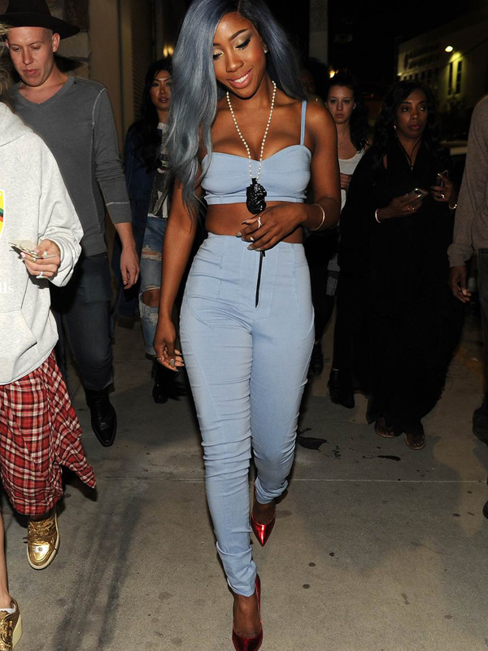

This Is A Sample Post!


One thing that really irks me is a person that lets other people define who they are. I was recently asked the question,
"Why are you following more people than those who follow you?" The person who asked me this question was referring to my Instagram
followers. After I responded with the question "Why does that matter?" , I was taken aback by the fact that this boy was actually
very concerned with his Instagram followers. Apparently, having less followers than people that follow you is not so good for your
image. It's mind boggling that in today's generation, people equate a person's value to Instagram likes and followers. Aren't you
more than that? I can't help but ask the question, would you feel worthless in the event that you had no likes or followers? Are you
that insecure with yourself that you must get the approval of others to determine your self worth?
"If you do base your life on how many touchdowns you score, how many championships you win, then when you have a setback, then when you have an
injury, you're not playing, or something goes wrong, your self-worth goes down."
- Tim Tebow
What does this quote say to you? Lets say you are "the man" on Instagram. You have thousands of followers and likes.
You post pictures of your expensive, overpriced sneakers and name brand clothing. But what happens when you lose your job? You can no longer
afford any of those things that made you look so desirable on Instagram. Are you still going to receive the same amount of likes? What happens
when you don't? Because you gained all of your self-worth from those likes, when they stop coming in you are left to feel worthless. This is a
very important lesson that many young people need to learn. I'm saying all of this as a reminder to everyone that not one bit of your self-worth
is determined by anyone's acceptance of you. Live for yourself and not others. You will achieve self-confidence once you realize that only you
can validate yourself.
Written by Imani Deen
The video above is a short documentary of 13 year old Mo'ne Davis, a Little Leauge World Series pitcher who can throw a 70mph fastball! Mo'ne is the first girl to win and pitch a shutout in Little Leauge World Series history. She is also the first African-American girl to play in Little League World Series and the first Little League player to appear on the cover of Sports Illustrated. Since pitching her first shutout, Mo'ne has received numerous messages from athletes and celebrities via Twitter and other social networking. She has been praised by Michelle Obama, Kevin Durant, and Ellen DeGeneres just to name a few. Mo'ne's story teaches a very valuable and inspirational messgae to the youth; You can be anything you want to be. You're never too young or old. Chase your dreams! Hard-work and dedication pay off. Keep up the good work Mo'ne!

You may know her as the girl who sang the powerful and meaningful song 16 at War. She can sing in 7 languages and is a clasically trained pianist. At the young age of 13, Karina Pasian was the center of a bidding war between Def Jam, Interscope, and Bad Boy records. In 2006 she decided to sign with Jay-Z at Def Jam. This video captures her performing in front of Jay-Z(former Def Jam President), Juan Perez, Tyran "Ty-Ty" Smith (Jay's Bestfriend), and her family. As you can see from the beginning of the video, Jay-Z asks Karina if she knew "A Song For You" by Donnie Hathaway, which is his favorite song. Karina kills it!
Karina is no longer signed with Def Jam. Now-A-Days, you can catch her performing live covering some of your favorite songs! Below you can see Karina performing "Flawless" and "Latch" And might we add, you still got it girl!
|
Instagram this is the second table on the right side of the page this is the second table on the right side of the page this is the second table on the right side of the page this is the second table on the right side of the page this is the second table on the right side of the page this is the second table on the right side of the page this is the second table on the right side of the page this is the second table on the right side of the page this is the second table on the right side of the page this is the second table on the right side of the page this is the second table on the right side of the page this is the second table on the right side of the page 
|